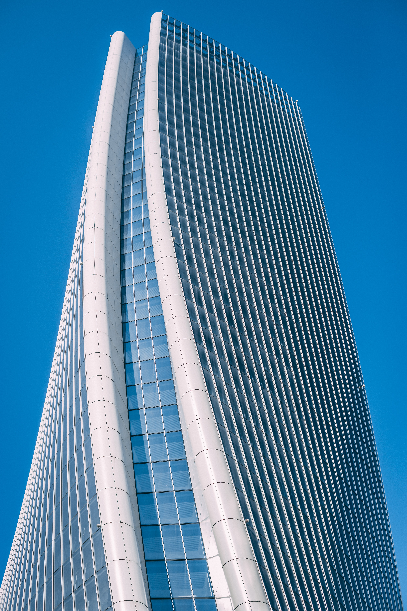
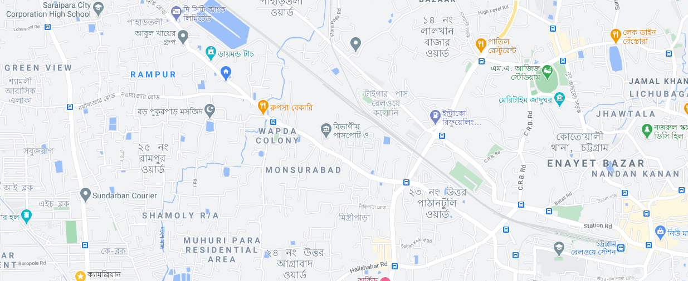

.png)
.png)
.png)
.png)
.png)

Flat Description Are Below
Family Flat 2BHK
only Family Allowed
2BHK With Gas Water for 24/7
15,000 Per Month
Hospital is under 1km
School is under 3km
Fantastic location for your living convenience!
1. Work
Plenty of job opportunity. Near to Johor Jaya commercial area, Ikea, Toppen, Aeon
Tebrau and Tesco Tebrau, Austin Industrial park, Austin commercial area, Ros Merah
Commercial area, JPJ
ONLY 1 trac light (12mins) to CIQ
2. Education
Near to Sunway colleges, Foon Yew Primary 5, Seri Alam educational hub
3. Play
Austin Water Theme Parks, Austin Golf Resorts, Walking distance to Johor Jaya
Sports Complex, badminton court, Public Swimming pool
4. Shopping and Amenities
5 mins to Ikea Tebrau, Aeon Tebrau, Ikano,Tesco Tebrau, Hospital Iskandar at Tebrau,
Taman Molek, Johor Jaya, Setia Indah
Very convenient location with lots of foodcourt, Coee shop, Makan paradise
5. High Connection, superb accessibility
15mins to CIQ, 5mins to Pasir Gudang highway,
6. Fully furnished bedroom:
Bed, Mattress, cabinet, fans, heaters, washing machine, fridge
Google Maps
